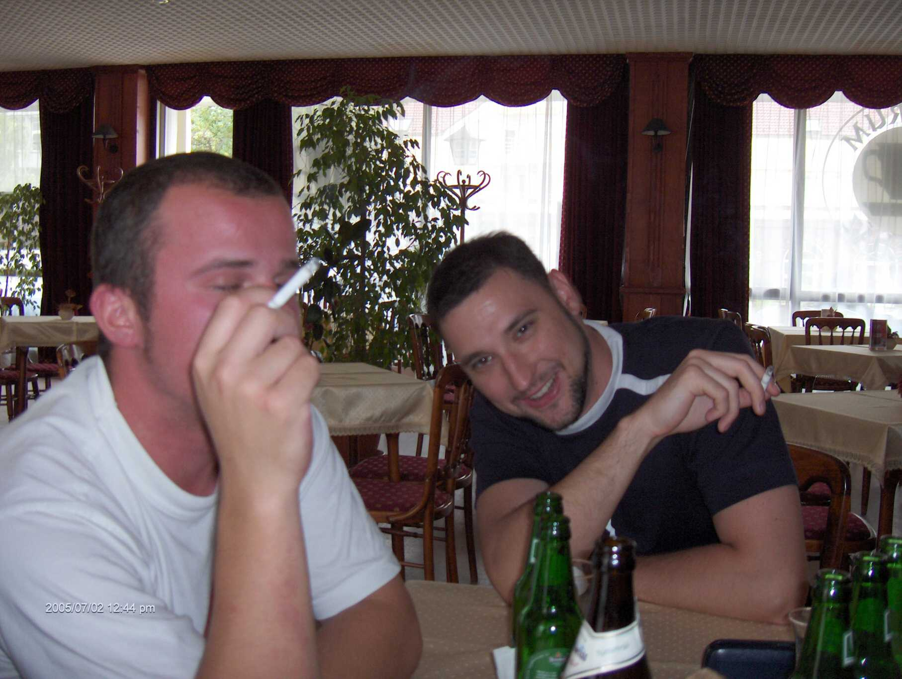
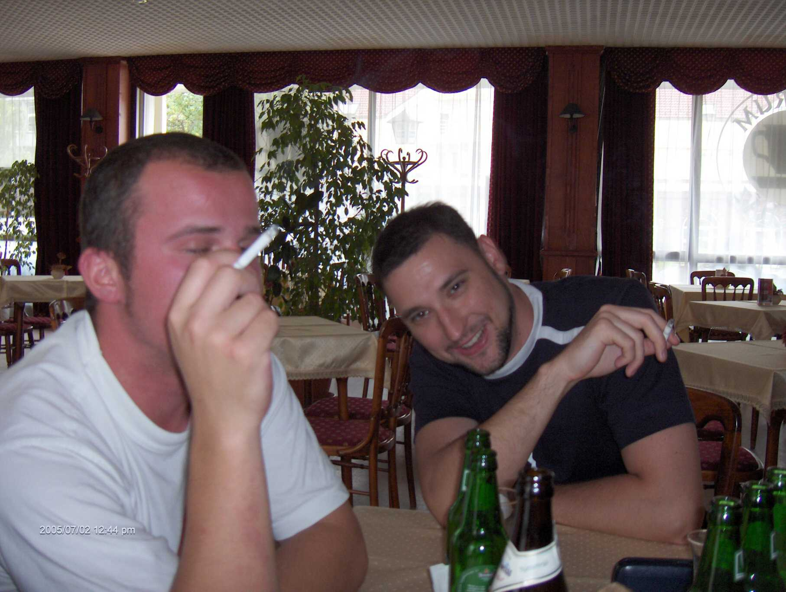

Mutter Péter
|
"Vedd a bátorságot, hallgass a szívedre és a megérzéseidre" Steve Jobs "A siker létráját nem lehet zsebre tett kézzel megmászni." Arnold Schwarzenegger "Gondolj arra, hogy nem kell feltétlenül azzá lenned, akinek mások akarnak" Muhammad Ali |
|


 
